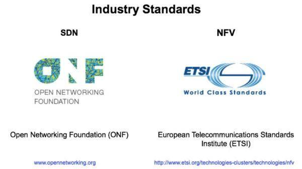
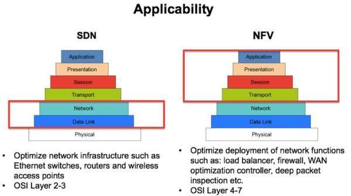

现有的传统基础通信网络的网元采用软/硬件垂直一体化架构（对外封闭型。从而造成了网络的复杂性、刚性、高成本性、低创新性。更为严重的问题是，这种封闭型的组网架构制约了云计算对于灵活地动态配置网络资源、高效地利用资源、公平地进行资源分配等的需求的满足），网络方面存在大量独立的“烟囱”群——这些使得基础通信网络的总体拥有成本居高不下。所以，“去电信化”变革的方向就在于对网络的基础架构进行变革。在此大背景之下，NFV（网络功能虚拟化）就成为“去电信化”基础通信网络领域的突破方向。
2012年，美国AT&T、BT（英国电信）、DT（德国电信）等基础电信网络运营商在ETSI（欧洲通信标准协会）提出NFV。ETSI为NFV制定了参考架构，以便所有参与者可以依照共同的框架完成相关研发工作。
在ETSI参考框架的基础之上，各个公司、运营商都会结合自身在电信行业和IT行业的专业能力，设计出的更进一步的实施蓝图，为电信运营商指出如何将NFV的不同组件整合在一起，形成完整、开放的、标准的、电信级NFV解决方案。
与NFV同时受到全球通信业界高度重视的还有SDN（软件定义网络）。目前，随着NFV与SDN相关技术的越来越深入的发展，在很多场合之下，通信业界所泛指的NFV通常就包含了NFV与SDN（也就是说，二者趋向于相互融合的发展态势）——这是因为两者的关系同时包含了“相似”（NFV与SDN都要求进行基础电信网络控制平面与数据平面的分离，而且均要求在分离出来的控制平面部署软件可编程平台）与“互补”（NFV所重点关注的是所有网元的网络功能的虚拟化，并以此来实现基础电信网络总体拥有成本的降低；而SDN所重点关注的则是第二层以及第三层电信承载网的虚拟化，并以此来促进网络业务的开放以及创新）。


随着移动宽带MBB流量的进一步冲击，加之大规模物联网以及未来企业级的特殊5G用例需求，运营商早期部署的NFV网络面临一些新的挑战，比如设备种类繁多、弹性不够、扩展性不好、网络运营体系成本偏高，同时还难以实现新业务的快速部署，一些面向未来的演进问题亟待解决。
NFV在通往5G网络演进之路上扮演的角色已经是业界共识。所以，业界在定义当下虚拟化网络演进策略及部署方案时，需要尽可能站在未来5G网络的需求上；同时，更应面对当前部署NFV的一些真实挑战，尤其是从早期部署NFV的先锋运营商那里汲取宝贵经验。
NFV是5G的主要组成部分，是边缘计算的推动者，也是构建未来电信云的基础。
5G网络的一个重要特征便是切片。如果将ETSI的NFV定义与5G的切片需求相互映射，便能得到下图所示的内容。图中VIM仍然负责基础架构的管理，VNFM负责切片的管理，NFVO则在业务层面进行管理。